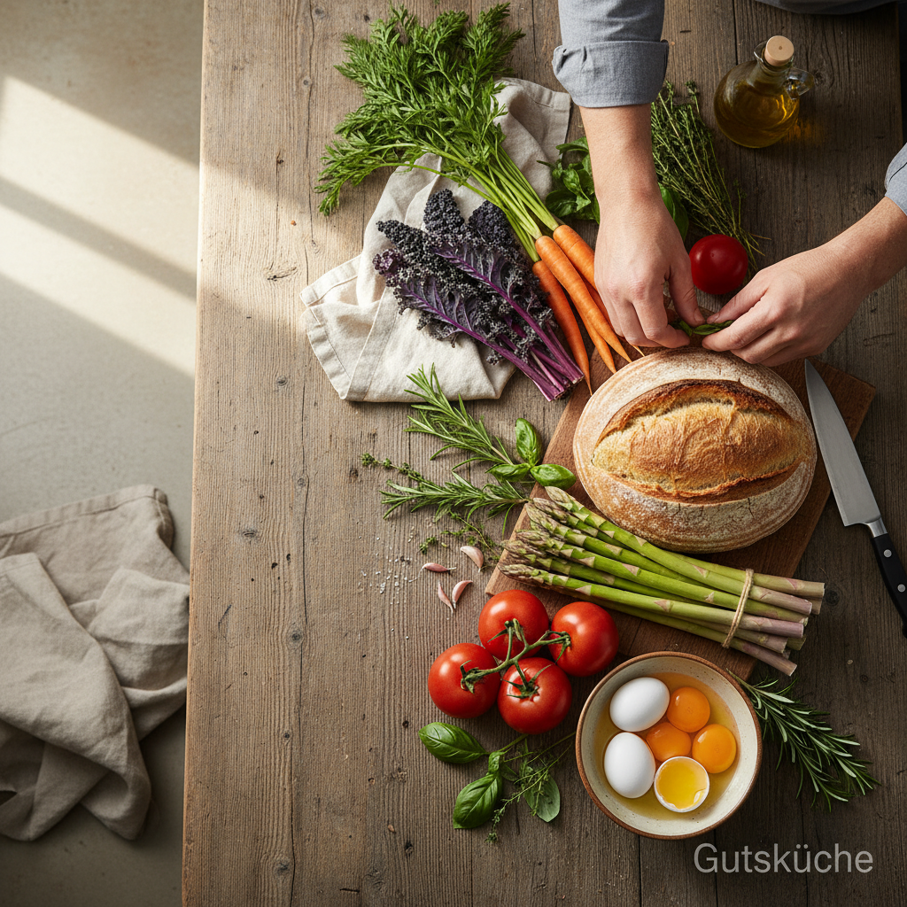
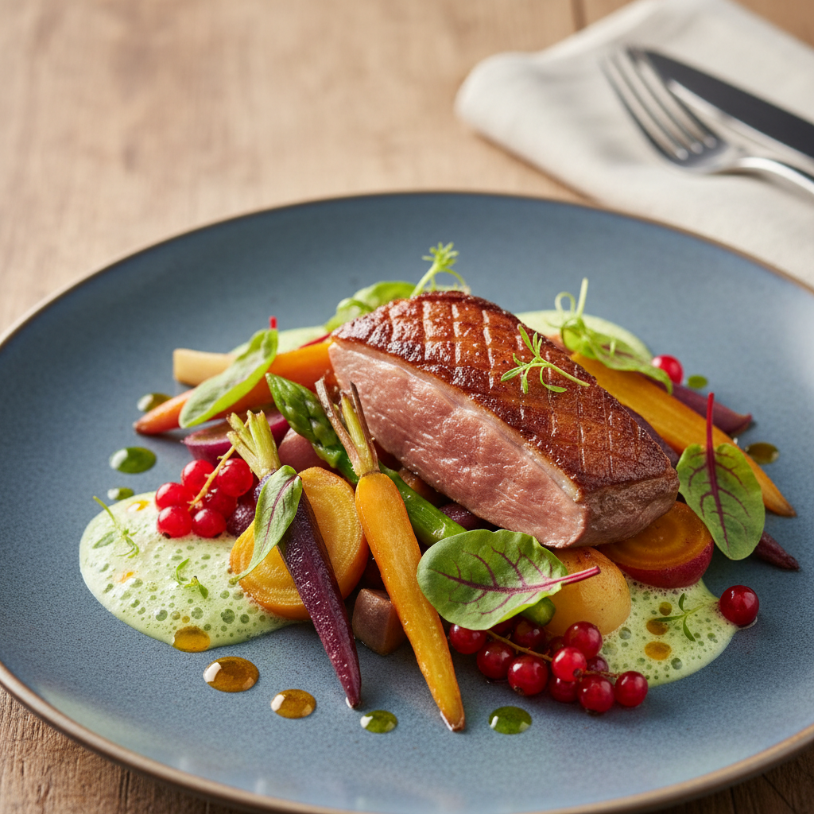
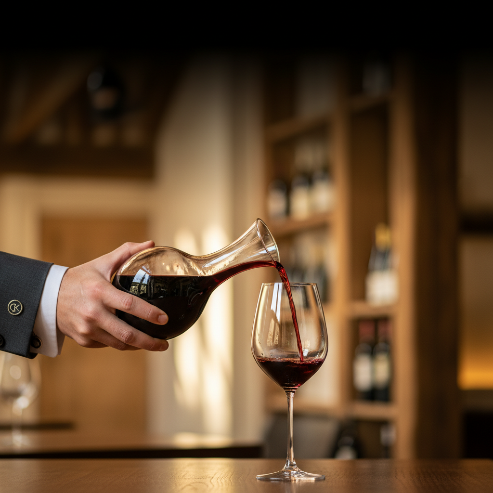
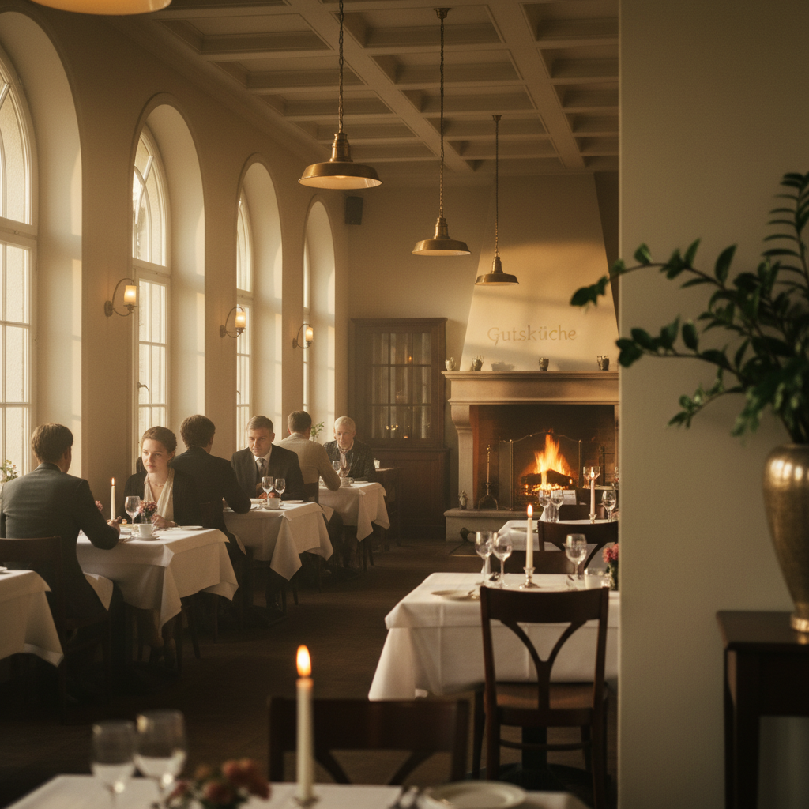

Unsere Leistungen: Genuss in jeder Facette
Tauchen Sie ein in die Welt der Gutsküche, wo traditionelle Handwerkskunst auf innovative Ideen trifft und jeder Bissen eine Geschichte erzählt.
Die Philosophie hinter unserem Geschmack
In der Gutsküche ist Kochen mehr als nur die Zubereitung von Speisen – es ist eine Leidenschaft, eine Kunst und eine Hommage an die Natur. Wir glauben an die Kraft ehrlicher Produkte, deren Herkunft wir kennen und die wir mit größtem Respekt behandeln. Unser Ziel ist es, Ihnen nicht nur ein Gericht, sondern ein ganzheitliches Erlebnis zu bieten, das alle Sinne anspricht.


Ehrliche Küche: Von der Region auf Ihren Teller
Unser Streifzug durch Töpfe und Pfannen beginnt bei der Auswahl der besten Zutaten. Wir arbeiten eng mit lokalen Bauern und Lieferanten zusammen, um Frische und Qualität zu garantieren. Jede Saison inspiriert uns zu neuen Kreationen, die den Reichtum unserer Region widerspiegeln. Wir legen Wert auf handwerkliche Zubereitung und verzichten auf unnötige Zusätze.

Die Welt der Weine: Deutsche Tropfen neu entdecken
Was wäre ein exquisites Mahl ohne den passenden Wein? Unsere Weinkarte ist eine Liebeserklärung an die deutschen Weinregionen. Unser geschultes Personal berät Sie gerne bei der Auswahl und empfiehlt Ihnen den idealen Wein zu Ihrem Gericht. Lassen Sie sich entführen auf eine sensorische Reise, die die Harmonie von Speise und Wein zelebriert.

Besondere Anlässe: Ihr Fest in der Gutsküche
Suchen Sie einen einzigartigen Ort für Ihre nächste Feier? Die Gutsküche bietet den perfekten Rahmen. Unser historisches Ambiente verleiht jedem Event eine exklusive Note. Wir entwickeln gemeinsam mit Ihnen ein maßgeschneidertes Menü, das genau Ihren Vorstellungen entspricht und Ihre Gäste begeistern wird.
Ihre Vorteile in der Gutsküche
- Regionale & saisonale Produkte
- Handgemachte Speisen
- Exklusive Weinauswahl
- Historisches Ambiente
- Individuelle Beratung
- Herzliche Gastfreundschaft
Planen Sie Ihr nächstes Erlebnis
Ob ein intimes Dinner, eine große Feier oder einfach nur ein gutes Glas Wein – die Gutsküche ist Ihr Ort für besondere Momente.
Veranstaltung planen